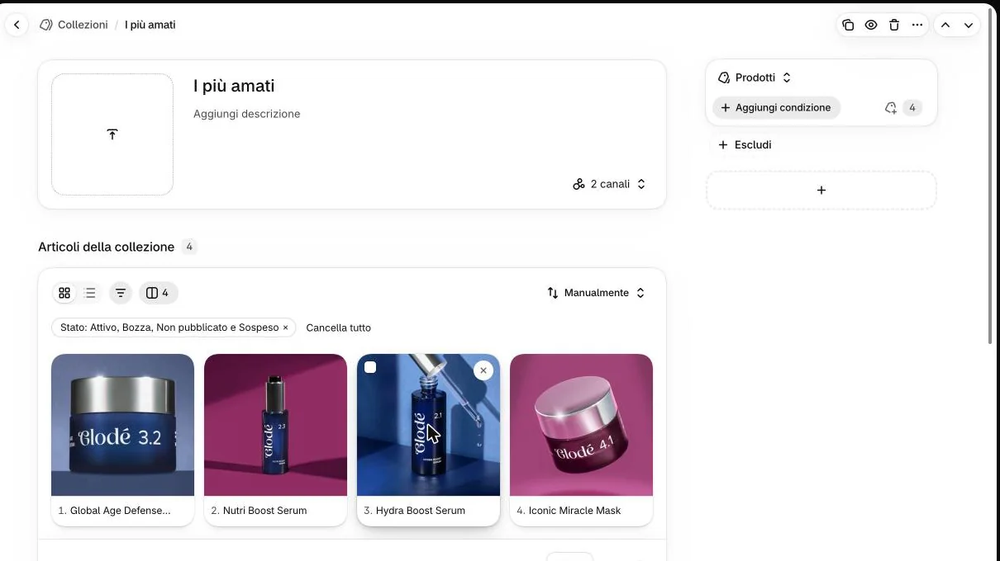
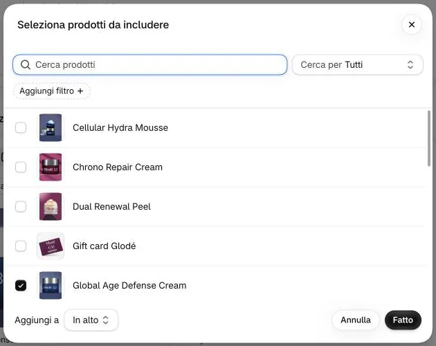
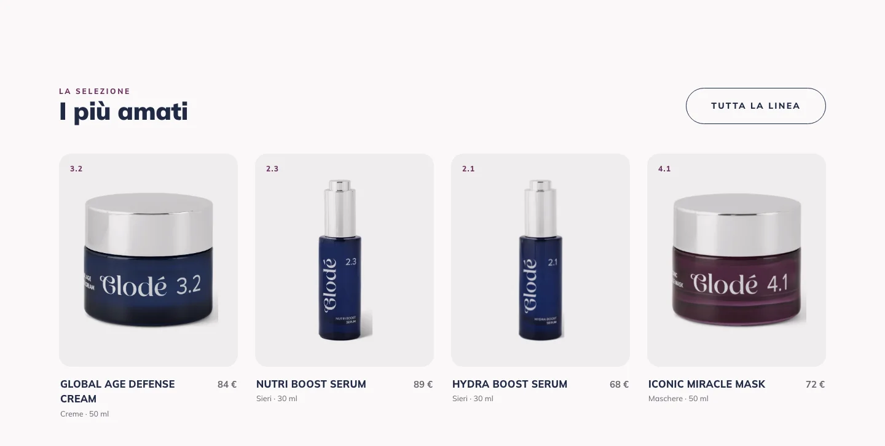

Per aggiungere un prodotto cliccate l’icona con il numero dei prodotti, a destra di «Aggiungi condizione».

Non quiNon qui3Perché non «Aggiungi condizione»?
Una condizione trasformerebbe «I più amati» in una collezione che si riempie da sola: i prodotti scelti a mano non conterebbero più. Il cestino in alto a destra elimina la collezione: mai.
Nella finestra «Seleziona prodotti da includere» cercate il prodotto, spuntatelo e cliccate «Fatto».

4Dove finisce il prodotto aggiunto?
In fondo alla finestra «Aggiungi a» dice «In alto»: il prodotto nuovo va in cima alla collezione, quindi primo in home. Se lo volete in un altro posto, scriveteci.
Per togliere un prodotto passateci sopra con il mouse e cliccate la ✕ in alto a destra della sua foto.
5Il prodotto si perde?
No: la ✕ lo toglie solo da questa collezione. Il prodotto resta nel negozio e nelle altre collezioni.
Controllate l’ordine: il numero davanti al nome è il posto in home.
6E per cambiare l’ordine?
L’ordinamento deve restare «Manualmente» (oggi è così). Spostare un prodotto non l’abbiamo provato insieme in questa guida: se l’ordine deve cambiare, scriveteci in che ordine li volete.
Ricaricate la home di glode-lab.it e controllate «I più amati».
Non è cambiato niente
Ricaricate di nuovo la collezione in admin: se il prodotto non c’è, rifate i passi 3 e 4. Se in admin c’è e sul sito no, scriveteci.

Sul sito
La sezione «I più amati» in home mostra i prodotti della collezione, nel suo ordine. Oggi sono quattro: tenetene quattro anche voi.
Un prodotto senza SKU sulla prima variante, o senza foto, non compare. Se la collezione restasse vuota, la home mostrerebbe i quattro di partenza. «Idee regalo» si cambia allo stesso modo.